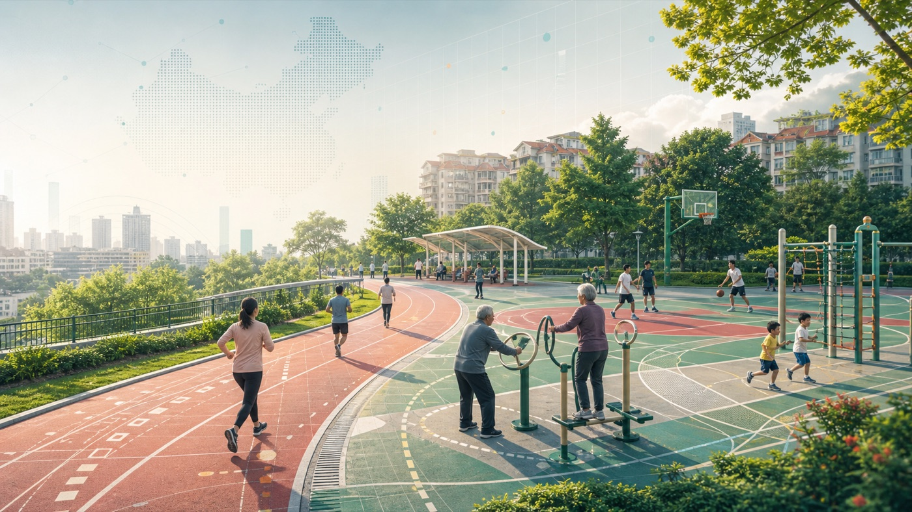

AI赋能体育传播 我国全民健身发展图景与区域差异观察从场地、人均面积、赛事活动和项目结构切入，观察“有场地”之后如何走向“会运动”。
打开网页基于 2026 年大赛公告中的“AI赋能体育传播”“铸牢中华民族共同体意识”“数智赋能国际传播”三类推荐方向，拆解出 5 个可继续深化的数据新闻网页。
每个页面都先做成可浏览、可演示的网页样机：有问题意识、核心数字、图表、解释文字、数据来源与后续深化路线。
当前版本以公开资料和权威统计为主，不抓取实时平台数据；如果进入正式参赛，可继续加入问卷、平台采样或 API 数据，并补充作品阐述文档。

AI赋能体育传播 我国全民健身发展图景与区域差异观察从场地、人均面积、赛事活动和项目结构切入，观察“有场地”之后如何走向“会运动”。
打开网页用短视频、网络视频、直播和生成式 AI 使用数据，解释体育传播为什么进入“再创作”时代。
打开网页把人口流动、跨省迁移、旅游往来和城市融居放在同一张图谱中观察。
打开网页围绕资金、交通、数字基础设施、公共服务和特色产业，呈现共同现代化的具体支点。
打开网页从海外账号、视频发布、浏览量、粉丝和入境游数据，看“看见中国”的路径变化。
打开网页不是把资料堆成报告，而是让读者沿着“现象-数据-解释-行动”的路径往下读。
每个专题都保留后续扩展口：地图、问卷、词频、平台评论、城市样本或人物访谈都能继续接入。
先让读者知道为什么值得读，再用 3-4 个可核验数字建立事实基础。
用折线、条形、矩阵和表格承载数据，文字只负责回答“这说明了什么”。
每页列出数据来源、处理口径和下一步补数方向，方便参赛阐述表复用。
选题来自第十一届中国数据新闻大赛公告；页面风格参考“河洛书苑生长笔记”的长页叙事、核心数据和分章节导航。